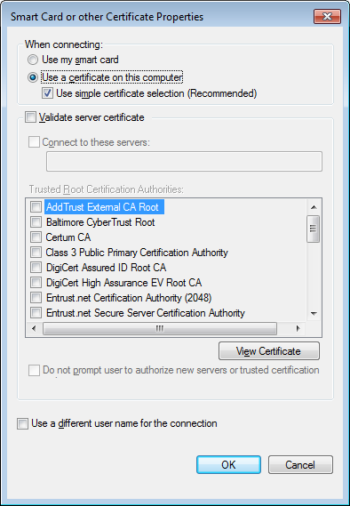

EAP-TLS patch for pppd
Troubleshooting and sample sessions
Even with all the correct configuration files it can be sometimes hard to get a PPTP connection to work.
In this section we will list some troubleshooting tips and the logs of two sample sessions. That way, a user
can compare the results to a "known-to-work" setup.
Troubleshooting: warning screen when establishing a connection
If you see the following screen

each time you start a VPN connection, then there is a mismatch between the server specified in the
EAP properties screen and the actual PPTP server name. Check with your PPTP VPN provider or admin
to find out the proper name of the PPTP VPN server. Alternatively, you may be able to find the right
server name by clicking on the Details drop-down button in the screen above.
Alternatively, you can disable all server checks to see if the problem then goes away by deselecting
the Validate server certificate checkbox as shown here:

However, this is not (no longer) recommended as it causes the VPN client to disable ALL
server certificate security checks, including the proper CA signing and validity of the server
certificate itself.
See Windows Certificate Verification for more details on
disabling and enabling this option.
Troubleshooting: hanging at "Checking username"
If you see the following screen
forever and the VPN connection is not established, then the server certificate did not pass
the client-side validation. This usually means that the VPN server certificate has expired or
is not yet valid.
Unfortunately, the Microsoft VPN client (in all Windows versions up to at least Windows 10 v1809) does
not abort the connection when this happens, as it should when conforming to RFC 2716 (page 11/12).
The client just sites there idly, continually sending a garbage message to the server. This garbage
message causes the server to not abort the connection either, causing an endless loop.
In order to fix this, either deselect the Validate server certificate checkbox (see above),
or even better, get your VPN server administrator to check the validity of the server certificate.
Note: This issue has been reported to Microsoft as MSRC Case 48337 but they do
not consider this a bug or a security issue and hence refuse to fix it.
Troubleshooting: IP level fragmentation with EAP-TLS
(provided by Charles Brady)
The symptom was that Windows 7 clients were getting into a loop during EAP-TLS negotiation, and
connections were failing.
The server-side ppp.log file showed the following:
Mar 31 10:24:45 e-mas pppd[30497]: rcvd [EAP Response id=0x82 TLS L-- ...]
Mar 31 10:24:45 e-mas pppd[30497]: <- Handshake: Client Hello
Mar 31 10:24:45 e-mas pppd[30497]: -> Handshake: Server Hello
Mar 31 10:24:45 e-mas pppd[30497]: -> Handshake: Certificate
Mar 31 10:24:45 e-mas pppd[30497]: -> Handshake: Certificate Request
Mar 31 10:24:45 e-mas pppd[30497]: sent [EAP Request id=0x83 TLS LM- ...]
Mar 31 10:24:45 e-mas pptpd[30496]: GRE: accepting packet #9
Mar 31 10:24:45 e-mas pppd[30497]: rcvd [EAP Response id=0x83 TLS Ack]
Mar 31 10:24:45 e-mas pppd[30497]: sent [EAP Request id=0x84 TLS --- ...]
Mar 31 10:25:00 e-mas pppd[30497]: last message repeated 4 times
Mar 31 10:25:00 e-mas pppd[30497]: sent [LCP EchoReq id=0x1 magic=0xa55eb200]
Mar 31 10:25:00 e-mas pptpd[30496]: GRE: buffering packet #15 (expecting #10, lost or reordered)
Mar 31 10:25:00 e-mas pppd[30497]: sent [EAP Request id=0x84 TLS --- ...]
Mar 31 10:25:15 e-mas pppd[30497]: last message repeated 4 times
Mar 31 10:25:15 e-mas pppd[30497]: sent [LCP EchoReq id=0x2 magic=0xa55eb200]
Mar 31 10:25:15 e-mas pptpd[30496]: GRE: timeout waiting for 5 packets
Mar 31 10:25:15 e-mas pptpd[30496]: GRE: accepting #15 from queue
Mar 31 10:25:15 e-mas pptpd[30496]: GRE: buffering packet #21 (expecting #16, lost or reordered)
Mar 31 10:25:15 e-mas pppd[30497]: rcvd [LCP EchoRep id=0x1 magic=0x6c0f09ff]
Mar 31 10:25:15 e-mas pppd[30497]: sent [EAP Request id=0x84 TLS --- ...]
Mar 31 10:25:30 e-mas pppd[30497]: last message repeated 4 times
This issue was finally tracked down to inappropriate EAP-TLS fragmentation.
The EAP Request "Length" was 1847 bytes. The client broke that into fragment one of 1498 bytes,
which was fragmented at the IP layer. The server did not receive both fragments due to
(other) networking issues, resulting in the failing connections.
Resolution
Add a parameter to the server side PPP config
mru 1350
to fix the EAP-TLS fragmentation.
Sample setup: Linux client and Linux server
In this example, the server was set up following the documentation page
How to run a Linux PPTP server with X.509 certificate support.
Similarly, the client was set up following the documentation page
How to run a Linux PPTP client with X.509 certificate support.
The server was started by launching the PPTP daemon, which in turn launches a PPP process for every connecting
client:
# systemctl start pptpd
The client was launched using
pppd file /etc/ppp/options-pptp-eaptls
cert /etc/ppp/keys/pptp-client.crt
key /etc/ppp/keys/pptp-client.key
ca /etc/ppp/keys/ca.crt
pty "pptp pptp-server.example.org --nolaunchpppd"
After the connection was established, the server VPN IP address was pinged from the client using
# ping 172.16.1.1
With all debug options set, the server /tmp/ppp.log log file shows the following output:
Server ppp.log
using channel 20
Using interface ppp0
Connect: ppp0 <--> /dev/pts/2
sent [LCP ConfReq id=0x1 ]
rcvd [LCP ConfReq id=0x1 ]
sent [LCP ConfAck id=0x1 ]
rcvd [LCP ConfAck id=0x1 ]
sent [EAP Request id=0xae Identity ]
rcvd [EAP Response id=0xae Identity ]
EAP: unauthenticated peer name "pptp-client"
getting eaptls secret
MTU = 1436
sent [EAP Request id=0xaf TLS --S]
rcvd [EAP Response id=0xaf TLS --- ...]
<- SSL/TLS Header: TLS 1.0
<- Handshake: Client Hello
-> SSL/TLS Header: TLS 1.0
-> Handshake: Server Hello
-> SSL/TLS Header: TLS 1.0
-> Handshake: Certificate
-> SSL/TLS Header: TLS 1.0
-> Handshake: Server Key Exchange
-> SSL/TLS Header: TLS 1.0
-> Handshake: Certificate Request
-> SSL/TLS Header: TLS 1.0
-> Handshake: Server Hello Done
sent [EAP Request id=0xb0 TLS LM- ...]
rcvd [EAP Response id=0xb0 TLS Ack]
sent [EAP Request id=0xb1 TLS --- ...]
rcvd [EAP Response id=0xb1 TLS LM- ...]
sent [EAP Request id=0xb2 TLS Ack]
rcvd [EAP Response id=0xb2 TLS --- ...]
<- SSL/TLS Header: TLS 1.0
<- Handshake: Certificate
certificate verify depth: 1
certificate verify depth: 0
Certificate CN: pptp-client , peer name pptp-client
<- SSL/TLS Header: TLS 1.0
<- Handshake: Client Key Exchange
<- SSL/TLS Header: TLS 1.0
<- Handshake: Certificate Verify
<- SSL/TLS Header: TLS 1.0
<- SSL/TLS Header: TLS 1.0
<- Handshake: Finished
-> SSL/TLS Header: TLS 1.0
-> ChangeCipherSpec
-> SSL/TLS Header: TLS 1.0
-> Handshake: Finished
sent [EAP Request id=0xb3 TLS --- ...]
rcvd [EAP Response id=0xb3 TLS Ack]
sent [EAP Success id=0xb4]
peer from calling number 194.171.96.60 authorized
sent [CCP ConfReq id=0x1 <mppe +H -M +S -L -D -C>]
rcvd [CCP ConfReq id=0x1 <mppe +H -M +S -L -D -C>]
sent [CCP ConfAck id=0x1 <mppe +H -M +S -L -D -C>]
rcvd [CCP ConfAck id=0x1 <mppe +H -M +S -L -D -C>]
MPPE 128-bit stateless compression enabled
sent [IPCP ConfReq id=0x1 <compress VJ 0f 01> <addr 172.16.1.1>]
rcvd [IPCP ConfReq id=0x1 <compress VJ 0f 01> <addr 0.0.0.0>]
sent [IPCP ConfNak id=0x1 <addr 172.16.1.10>]
rcvd [IPCP ConfAck id=0x1 <compress VJ 0f 01> <addr 172.16.1.1>]
rcvd [IPCP ConfReq id=0x2 <compress VJ 0f 01> <addr 172.16.1.10>]
sent [IPCP ConfAck id=0x2 <compress VJ 0f 01> <addr 172.16.1.10>]
local IP address 172.16.1.1
remote IP address 172.16.1.10
Script /etc/ppp/ip-up started (pid 6168)
Script /etc/ppp/ip-up finished (pid 6168), status = 0x0
Modem hangup
Connect time 5.3 minutes.
Sent 168 bytes, received 168 bytes.
Script /etc/ppp/ip-down started (pid 6214)
MPPE disabled
sent [LCP TermReq id=0x2 "MPPE disabled"]
Connection terminated.
Note
The ppp binary on the server was built and linked against OpenSSL 1.1. With OpenSSL 1.1,
an extra line is added in the ppp.log file:
SSL/TLS Header: TLS 1.0
The client was built and linked against OpenSSL 1.0.x:
Client ppp.log
using channel 23
Using interface ppp0
Connect: ppp0 <--> /dev/pts/1
sent [LCP ConfReq id=0x1 <asyncmap 0x0> <magic 0x7ef7d078>]
rcvd [LCP ConfReq id=0x1 <mru 1450> <asyncmap 0x0> <auth eap> <magic 0xb172e99d>]
sent [LCP ConfAck id=0x1 <mru 1450> <asyncmap 0x0> <auth eap> <magic 0xb172e99d>]
rcvd [LCP ConfAck id=0x1 <asyncmap 0x0> <magic 0x7ef7d078>]
rcvd [EAP Request id=0xae Identity <Message "Name">]
EAP: Identity prompt "Name"
sent [EAP Response id=0xae Identity <Name "pptp-client">]
rcvd [EAP Request id=0xaf TLS --S]
MTU = 1436
calling get_eaptls_secret
calling eaptls_init_ssl
Initializing SSL BIOs
-> Handshake: Client Hello
sent [EAP Response id=0xaf TLS --- ...]
rcvd [EAP Request id=0xb0 TLS LM- ...]
sent [EAP Response id=0xb0 TLS Ack]
rcvd [EAP Request id=0xb1 TLS --- ...]
<- Handshake: Server Hello
<- Handshake: Certificate
certificate verify depth: 1
certificate verify depth: 0
Certificate CN: pptp-server , peer name pptp-server
<- Handshake: Server Key Exchange
<- Handshake: Certificate Request
<- Handshake: Server Hello Done
-> Handshake: Certificate
-> Handshake: Client Key Exchange
-> Handshake: Certificate Verify
-> ChangeCipherSpec
-> Handshake: Finished
sent [EAP Response id=0xb1 TLS LM- ...]
rcvd [EAP Request id=0xb2 TLS Ack]
sent [EAP Response id=0xb2 TLS --- ...]
rcvd [EAP Request id=0xb3 TLS --- ...]
<- ChangeCipherSpec
<- Handshake: Finished
sent [EAP Response id=0xb3 TLS Ack]
rcvd [EAP Success id=0xb4]
EAP authentication succeeded
sent [CCP ConfReq id=0x1 <mppe +H -M +S -L -D -C>]
rcvd [CCP ConfReq id=0x1 <mppe +H -M +S -L -D -C>]
sent [CCP ConfAck id=0x1 <mppe +H -M +S -L -D -C>]
rcvd [CCP ConfAck id=0x1 <mppe +H -M +S -L -D -C>]
MPPE 128-bit stateless compression enabled
sent [IPCP ConfReq id=0x1 <compress VJ 0f 01> <addr 0.0.0.0>]
rcvd [IPCP ConfReq id=0x1 <compress VJ 0f 01> <addr 172.16.1.1>]
sent [IPCP ConfAck id=0x1 <compress VJ 0f 01> <addr 172.16.1.1>]
rcvd [IPCP ConfNak id=0x1 <addr 172.16.1.10>]
sent [IPCP ConfReq id=0x2 <compress VJ 0f 01> <addr 172.16.1.10>]
rcvd [IPCP ConfAck id=0x2 <compress VJ 0f 01> <addr 172.16.1.10>]
local IP address 172.16.1.10
remote IP address 172.16.1.1
Script /etc/ppp/ip-up started (pid 26686)
Script /etc/ppp/ip-up finished (pid 26686), status = 0x0
Terminating on signal 15
Connect time 5.3 minutes.
Sent 168 bytes, received 168 bytes.
Script /etc/ppp/ip-down started (pid 26690)
MPPE disabled
sent [LCP TermReq id=0x2 "MPPE disabled"]
sent [LCP TermReq id=0x3 "MPPE disabled"]
Script pptp pptp-server.example.org --nolaunchpppd finished (pid 26675), status = 0x0
Modem hangup
Connection terminated.